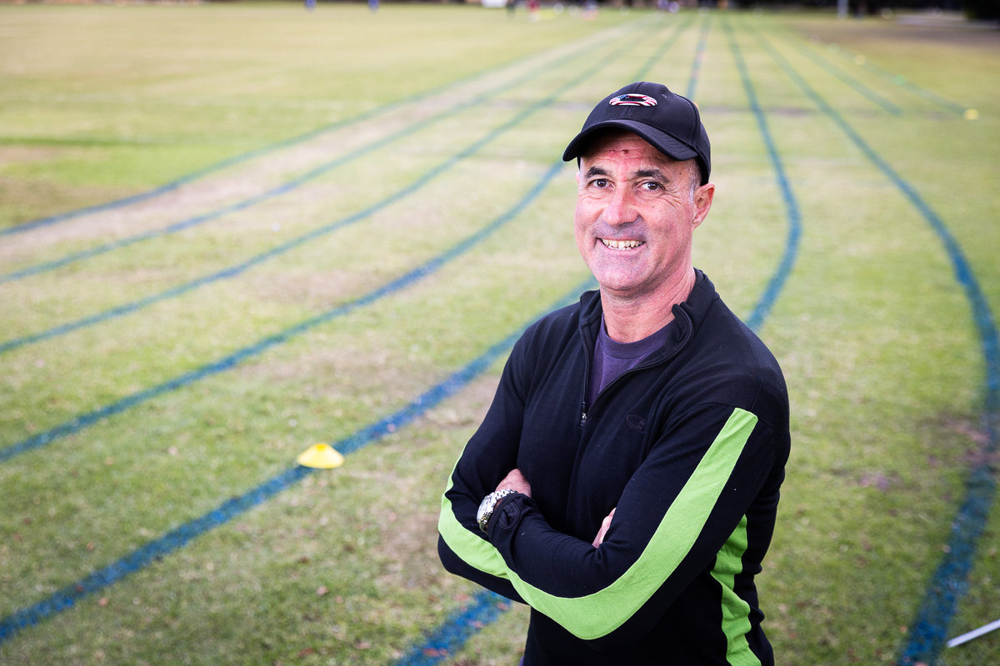
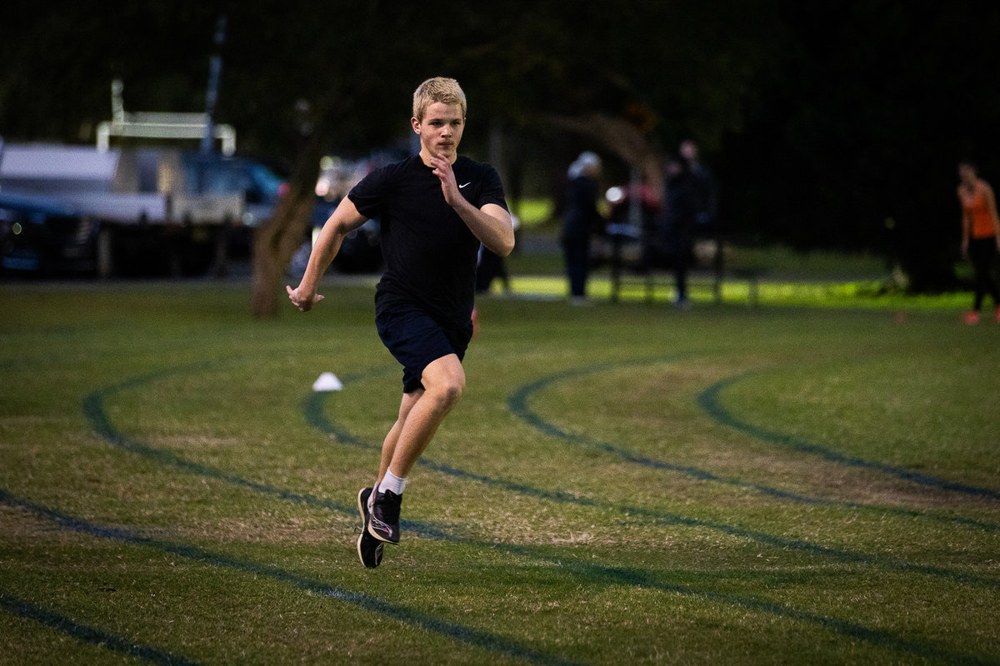
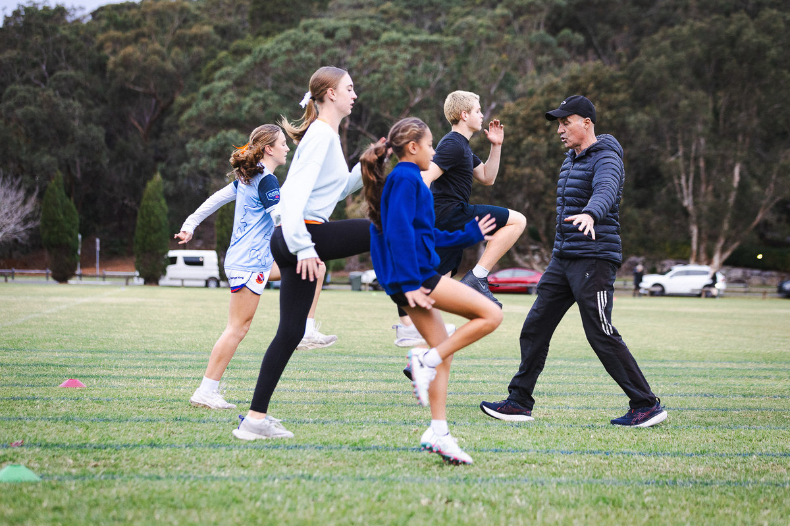
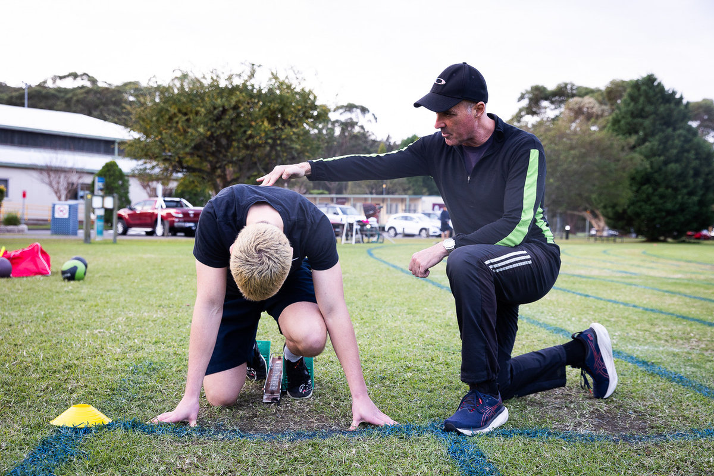
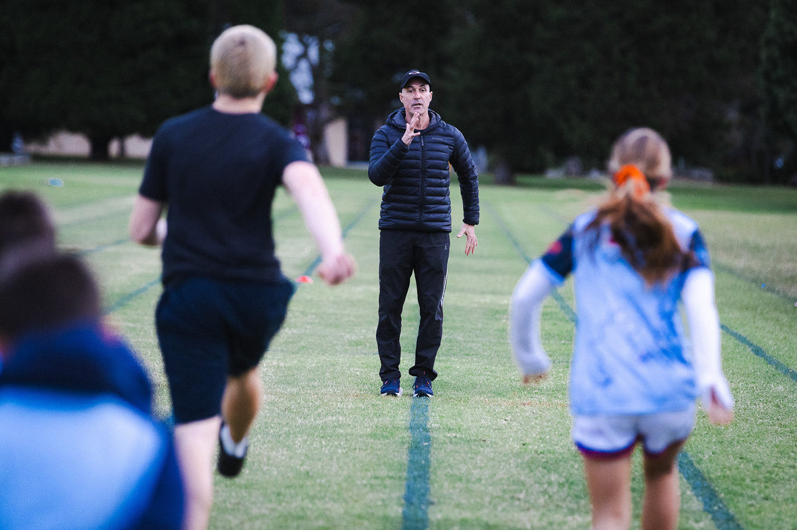
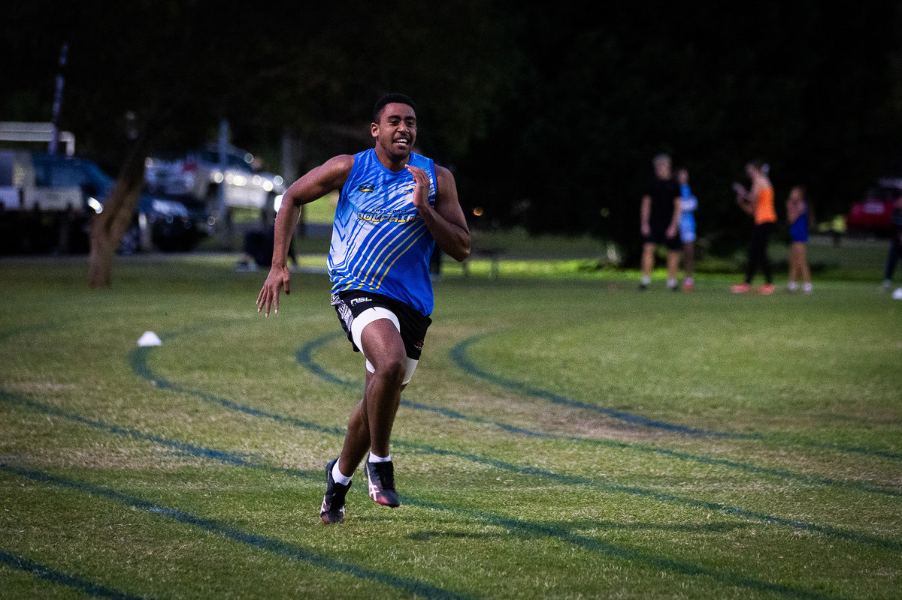
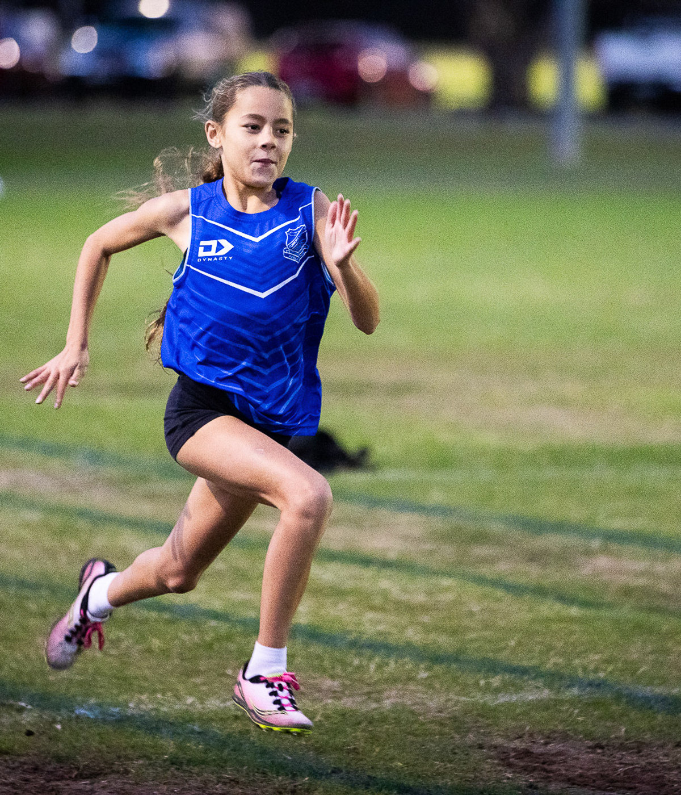
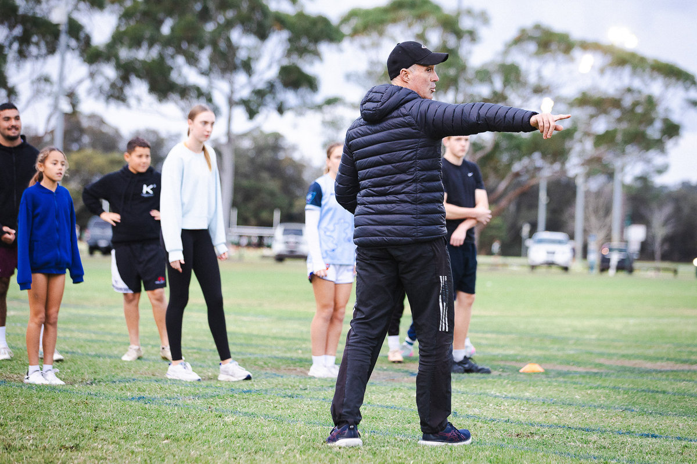
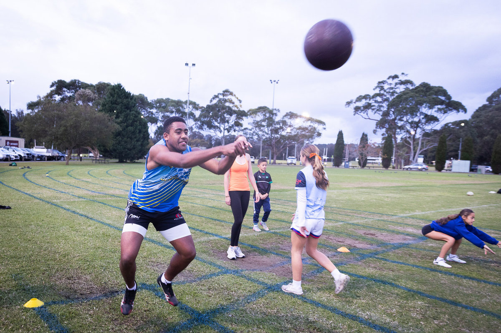

Sprint Coaching in Narrabeen, Sydney
The gun fires. Your hands leave the track. In that fraction of a second, coaching separates fast from fastest. Train with Gary Theodore — 30+ years of sprint mastery — at the Sydney Academy of Sport. Thursdays, 4:30 PM.

About Coach Gary Theodore
Thirty Years on the Track. Yours Starts Now.
GT Sprint Coaching is a professional sprint coaching service based at the Sydney Academy of Sport in Narrabeen, Sydney, led by head coach Gary Theodore with over 30 years of experience training athletes of all levels.
I've spent over 30 years coaching sprinters — and speed is still the thing that gets me out of bed every morning. There's nothing like watching an athlete unlock a gear they didn't know they had.
I coach at the Sydney Academy of Sport in Narrabeen — a great outdoor training ground surrounded by bushland on Sydney's Northern Beaches. Whether you're a junior just getting started, a club athlete chasing PBs, or a team sport player who needs to be quicker on the park, I tailor every session to where you are and where you want to go.
My coaching is built on biomechanics, not guesswork. We drill arm drive, foot strike, hip position, block angles — the details that separate quick from fast. Whether you're a junior building foundations, an elite chasing times, or a team sport athlete who needs to be the quickest on the park — I'll meet you where you are and take you somewhere you didn't think you could reach.
Sprint Coaching Services in Narrabeen
GT Sprint Coaching offers three core services: sprint training, running mechanics coaching, and starting block technique sessions at the Sydney Academy of Sport.

Sprint Training
Your first three steps decide the race. I rebuild your acceleration from the ground up — driving knee angle, shin position, ground contact time — until those explosive opening strides become automatic. Then we build top-end speed: teaching your body to hold its fastest mechanics under fatigue, so you're still accelerating when everyone else is tightening up.

Running Mechanics
Most athletes have never been taught how to run. I strip it back to raw mechanics: dorsiflexion, hip extension, arm-leg coordination, elastic ground contact. When your technique clicks, the ground pushes back harder, your stride opens up, and the same effort produces visibly more speed. Better mechanics also means fewer hamstrings strains and fewer seasons cut short.

Starting Block Techniques
Block setup, positioning, and the explosive drive phase — I coach it all with precision. Pedal spacing, hip height in the set position, first-step angles, and the arm drive that generates forward momentum. Whether you're learning blocks for the first time or refining your competition start, I'll build you a launch that's hard to beat.
Whether you play rugby league, soccer, AFL, netball, hockey, or athletics — I build programs around YOUR sport's speed demands. From competition starts and transitions to sport-specific movement patterns, every session is measured, progressed, and purposeful.
Why Athletes Train With Me
What sets us apart on the track
30+ Years Experience
Over three decades dedicated to sprint coaching. That depth of experience means I can spot what needs fixing and know how to fix it.
Personalised Programs
No cookie-cutter plans. Every athlete gets a program tailored to their goals, their body, and their sport.
Great Training Ground
GT Sprint Coaching trains at the Sydney Academy of Sport in Narrabeen — an outdoor facility surrounded by bushland with plenty of space to sprint, drill, and improve.
All Levels Welcome
From first-time juniors to seasoned elites, I coach athletes at every stage of their journey. Everyone belongs on my track.
Training at the Sydney Academy of Sport
Training moments from GT Sprint Coaching sessions at the Sydney Academy of Sport





Sprint Coaching FAQs — Narrabeen, Northern Beaches
Everything you need to know about training with GT Sprint Coaching
I train athletes at the Sydney Academy of Sport, located on Wakehurst Parkway in Narrabeen, NSW 2101, on Sydney's Northern Beaches. We train outdoors on grass — surrounded by bushland, fresh air, and plenty of space. It's a special place to run.
Sessions run every Thursday from to at the Sydney Academy of Sport. It's one focused hour of high-quality sprint coaching — enough to make a real difference every week without overloading your schedule.
That's me! I'm Gary Theodore, and I've been coaching sprinters for over 30 years. Speed has been my life's work. I work with athletes of all levels — juniors, club sprinters, and team sport players — at the Sydney Academy of Sport in Narrabeen. My philosophy is simple: master the fundamentals, refine the details, and let your speed do the talking.
I coach athletes at every level. Whether you're a junior just starting out, an experienced club runner, an elite sprinter, or a team sport athlete looking for more speed on the field — I'll build a program around your needs. If you want to get faster, you belong here.
Absolutely not. Some of my favourite coaching moments come from working with athletes who've never done formal sprint training before. I'll meet you exactly where you are and build you up with proper technique and confidence. Everyone starts somewhere — the track is for all of us.
Speed is the ultimate advantage in almost every sport. I regularly work with athletes from rugby league, soccer, AFL, netball, hockey, and athletics. If your sport demands explosive acceleration, change of direction, or top-end speed, sprint coaching will take your performance to the next level.
Give me a call on 0403 936 895, email me at gtheo1@yahoo.com, or reach out via Instagram @g.t_coaching. Tell me a bit about yourself and your goals, and I'll get you set up for your first session. It's that simple.
Keep it simple: wear comfortable athletic clothing, bring running shoes (or spikes if you have them), and pack a water bottle. The Sydney Academy of Sport provides the track and facilities — leave the fancy gear at home — just bring shoes you can sprint in, water, and the willingness to be coached.
Driving is the easiest option — there's plenty of free parking right at the venue. If you're coming by bus, services run along Pittwater Road and connect through to Wakehurst Parkway. From anywhere on the Northern Beaches or upper North Shore, you're looking at a short trip. Drop me a message on Instagram if you need help figuring out your route.
It's the combination that's hard to find anywhere else: 30+ years of hands-on coaching experience, a truly personalised approach for every athlete, and training at the Sydney Academy of Sport in Narrabeen. I don't do generic programs. Every rep, every drill, every session is built around making you faster.
I run group training sessions every Thursday at the Sydney Academy of Sport. Even in a group setting, every athlete gets personalised attention — I tailor drills and feedback to your level and goals so you're always working on what matters most for your development.
For current pricing and session packages, reach out to me via Instagram @g.t_coaching. I offer competitive rates for professional sprint coaching on Sydney's Northern Beaches — and your first conversation is always free.
Absolutely. I love working with junior athletes and teenagers. My sessions are age-appropriate — building proper running mechanics, coordination, and confidence while keeping things fun and engaging. Some of my most rewarding coaching comes from watching young athletes discover their speed for the first time.
Ready to find out what you're capable of?
Message Coach GaryYour First Session Starts Here
Ready to find out how fast you really are? Reach out and let's get you on the track.
Reach Coach Gary
Training Location
Sydney Academy of SportWakehurst Parkway
Narrabeen NSW 2101
Phone
0403 936 895Session Schedule
Every Thursday
–
Website
gtsprintcoaching.comThe Sydney Academy of Sport sits along Wakehurst Parkway in Narrabeen, on Sydney's stunning Northern Beaches. Just minutes from Narrabeen Lake, Dee Why, Collaroy, Brookvale, Frenchs Forest, Curl Curl, Freshwater, and Warriewood. Easily accessible from Manly, Mona Vale, Pittwater, and the wider Warringah area. Free parking on site.